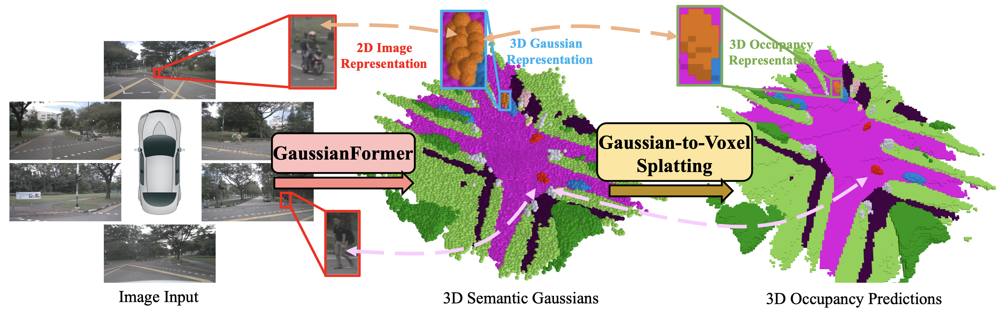
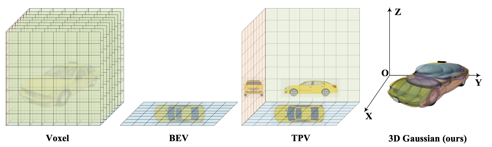
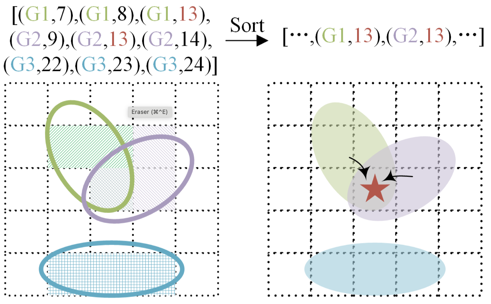
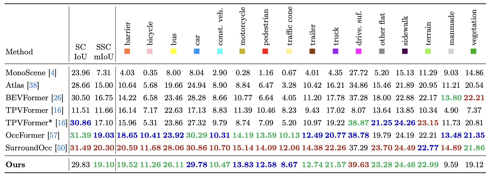
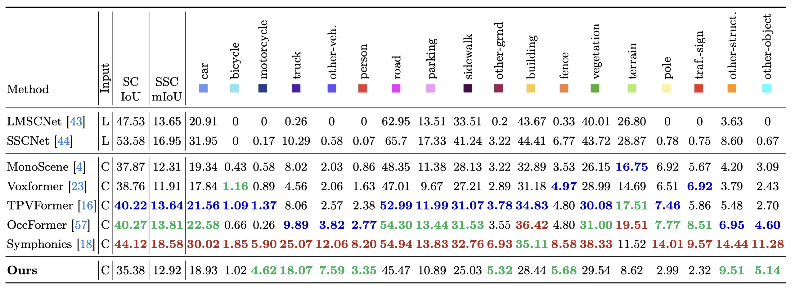
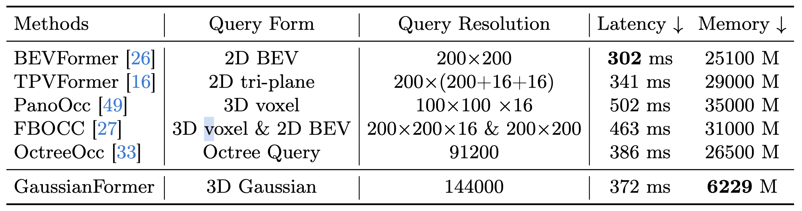
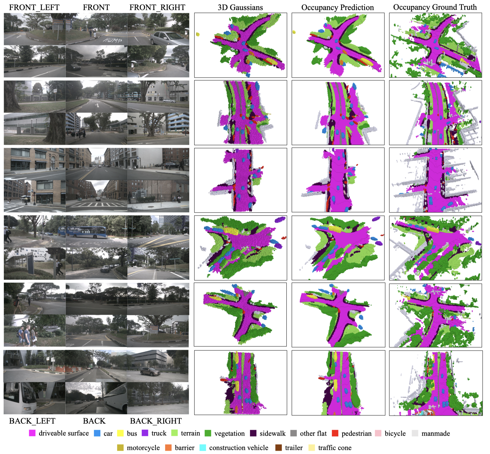

Overview of our contributions. Considering the universal approximating ability of Gaussian mixture, we propose an object-centric 3D semantic Gaussian representation to describe the fine-grained structure of 3D scenes without the use of dense grids. We propose a GaussianFormer model consisting of sparse convolution and cross-attention to efficiently transform 2D images into 3D Gaussian representations. To generate dense 3D occupancy, we design a Gaussian-to-voxel splatting module that can be efficiently implemented with CUDA. With comparable performance, our GaussianFormer reduces memory consumption of existing 3D occupancy prediction methods by 75.2% - 82.2%.
Object-centric 3D Scene Representation (3D Semantic Gaussians)
The voxel representation assigns each voxel in the 3D space with a feature and is redundant due to the sparsity nature of the 3D space. BEV and TPV employ 2D planes to describe 3D space but can only alleviate the redundancy issue. Differently, the proposed object-centric 3D Gaussian representation can adapt to flexible regions of interest yet can still describe the fine-grained structure of the 3D scene due to the strong approximating ability of mixing Gaussians.

Each Gaussian represents a flexible region of interest and consists of the mean, covariance, and its semantic category.
GaussianFormer: Image to Gaussians
We randomly initialize a set of queries to instantiate the 3D Gaussians and adopt the cross-attention mechanism to aggregate information from multi-scale image features. We iteratively refine the properties of the 3D Gaussians for smoother optimizations. To efficiently incorporate interactions among 3D Gaussians, we treat them as point clouds located at the Gaussian means and leverage 3D sparse convolutions to process them. We then decode the properties of 3D semantic Gaussians from the updated queries as the scene representation.


Results
The proposed 3D Gaussian representation uses a sparse and adaptive set of features to describe a 3D scene but can still model the fine-grained structure due to the universal approximating ability of Gaussian mixtures
nuScenes
3D semantic occupancy prediction results on nuScenes validation set. While the original TPVFormer is trained with LiDAR segmentation labels, TPVFormer* is supervised by dense occupancy annotations. Our method achieves comparable performance with state-of-the-art methods.

SSCBench-KITTI-360
Our method achieves performance on par with state-of-the-art methods, excelling at some smaller and general categories (i.e. motorcycle, other-veh.).

Efficiency Comparisons
The latency and memory consumption for GaussianFormer are tested on one NVIDIA 4090 GPU with batch size one, while the results for other methods are reported in OctreeOcc tested on one NVIDIA A100 GPU. Our method demonstrates significantly reduced memory usage compared to other representations.

Visualizations
We visualize the 3D Gaussians by treating them as ellipsoids centered at the Gaussian means with semi-axes determined by the Gaussian covariance matrices. Our GussianFormer not only achieves reasonable allocation of resources, but also captures the fine details of object shapes.

Bibtex
@article{huang2024gaussian,
title={GaussianFormer: Scene as Gaussians for Vision-Based 3D Semantic Occupancy Prediction},
author={Huang, Yuanhui and Zheng, Wenzhao and Zhang, Yunpeng and Zhou, Jie and Lu, Jiwen},
journal={arXiv preprint arXiv:},
year={2023}
}